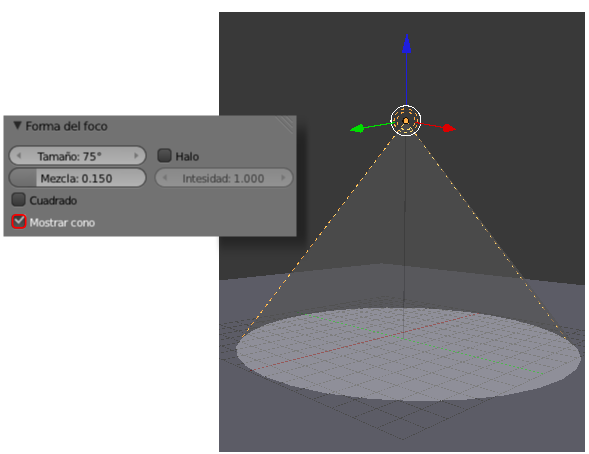
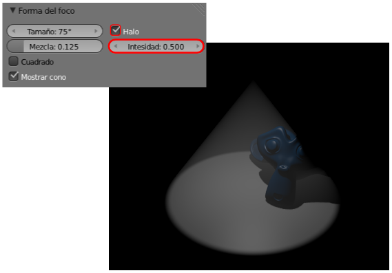
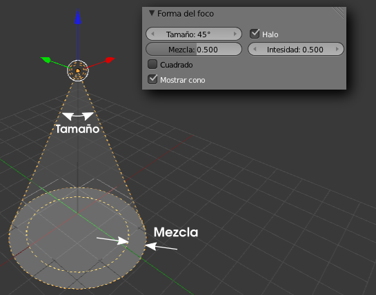
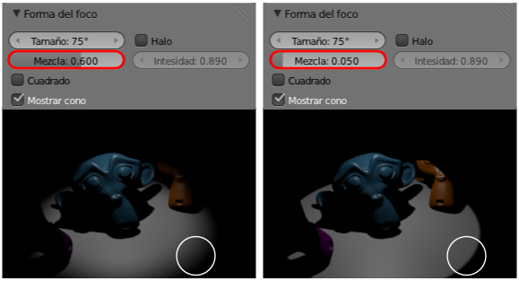
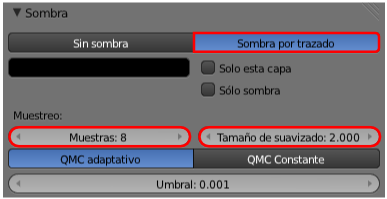

Energía y color
En la botonera Lámpara nos encontramos con un viejo conocido: el gran rectángulo que da acceso al editor de colores. Normalmente la luz es blanca pero nada nos impide darle una tonalidad amarillenta o anaranjada a una lámpara de tipo Sol  , por ejemplo.
, por ejemplo.
Inmediatamente debajo está el parámetro Energía. Es un concepto muy relativo. Por ejemplo un valor de 1.000 en una lámpara Puntual  puede iluminar mucho mientras que en una de tipo Sol
puede iluminar mucho mientras que en una de tipo Sol  será una iluminación muy pobre. Esto es así porque con los parámetros por defecto, la distancia entre el foco y el objeto iluminado es tenida en cuenta. La luz se comporta de una manera matemática iluminando menos aquellos objetos que se encuentran más alejados.
será una iluminación muy pobre. Esto es así porque con los parámetros por defecto, la distancia entre el foco y el objeto iluminado es tenida en cuenta. La luz se comporta de una manera matemática iluminando menos aquellos objetos que se encuentran más alejados.
Por ejemplo, el tipo de lámpara Puntual  presenta una opción muy interesante que permite controlar con exactitud en qué lugar la iluminación se extingue por completo. Se trata de la opción Esfera de la que concretamos el radio en el campo Distancia.
presenta una opción muy interesante que permite controlar con exactitud en qué lugar la iluminación se extingue por completo. Se trata de la opción Esfera de la que concretamos el radio en el campo Distancia.
Sin embargo con esta lámpara Puntual  no vamos a controlar la dureza del corte iluminación/sombra. Para eso disponemos de la lámpara Foco . Supongamos que en la escena por defecto hemos sustituido el cubo por un plano y la lámpara Puntual
no vamos a controlar la dureza del corte iluminación/sombra. Para eso disponemos de la lámpara Foco . Supongamos que en la escena por defecto hemos sustituido el cubo por un plano y la lámpara Puntual  por una de tipo Foco . Esto es lo que tenemos.
por una de tipo Foco . Esto es lo que tenemos.
Lo primero que echamos en falta es controlar visualmente hasta dónde queda iluminado el plano. Para ello nos vamos a la botonera Forma del foco y activamos la opción Mostrar cono.
Esta es una ayuda visual propia del editor Vista 3D por lo que no aparecerá ese efecto luminoso en el render. Para conseguir ese efecto hay que activar la opción Halo de esta misma botonera y jugar con su parámetro Intensidad. En el siguiente render se ve el haz de luz pero, al ser una escena con sólo una lámpara, todo aquello que queda fuera de él aparece de negro absoluto.
Sin salirnos de esta botonera sobre Forma del foco es posible editar:
- Tamaño. En realidad se refiere a la amplitud del haz de luz; se mide en grados.

- Mezcla. Aquí es dónde determinamos la dureza con la que se hace la transición entre zona iluminada y zona en sombra. Cuanto más grande sea este valor, más evidente es en el editor Vista 3D una segunda circunferencia que nos orienta sobre esta amplitud en la transición (lo vemos en la anterior imagen). En la siguiente imagen se compara la diferencia entre Mezcla alta (0.600) y baja (0.050). La transición luz/sombra es muy brusca a valores bajos y muy suave a valores altos.

Dureza de la iluminación
Recordamos que ya en su momento estudiamos cómo utilizar los parámetros de la botonera Sombra para conseguir sensaciones de luz dura o luz suave.
